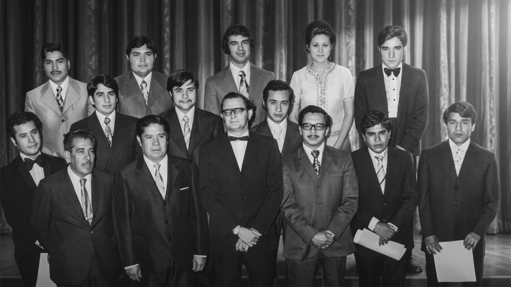

1933–1973 · Profesionalización y vocación
La educación en Celaya comenzaba a dejar atrás sus primeros pasos para convertirse en una verdadera vía de profesionalización.
Ya no se trataba solamente de abrir espacios para aprender. Comenzaban a formarse generaciones destinadas a incorporarse a la vida profesional de la región.
En 1933 surge la carrera de Contador Privado.
Años después, en 1948, se consolida la formación en Contaduría Pública y Auditoría.
La educación deja de ser solamente una respuesta a la necesidad y comienza a convertirse en una posibilidad de futuro.
Los primeros años de esta transformación pueden seguirse también a través de las imágenes que sobrevivieron al paso del tiempo.
No tenían certezas.
Tenían convicción.
Las instituciones pueden crecer, reorganizarse y cambiar de nombre. Pero son las generaciones quienes les dan vida.
Entre aquellos estudiantes se encontraba Don Carlos Martínez Inda.
Su historia personal permite mirar este periodo desde otro ángulo: no solamente desde las instituciones que se construían, sino desde quienes vivieron aquella transformación.
Años después, Don Carlos recordó en vida sus primeros momentos como estudiante. Su testimonio permite acercarnos a la experiencia de quienes formaron parte de aquellas primeras generaciones.
Se titulan los primeros Contadores Privados y Auditores formados en Celaya.
El aula comienza a tener una consecuencia concreta: los estudiantes salen al mundo profesional.

La historia de Don Carlos Martínez Inda no se encuentra solamente en las aulas ni en los documentos de la institución. También permanece en las experiencias de quienes compartieron con él aquellos años.
Su manera de entender la educación iba más allá de la formación académica. Se preocupaba por que los estudiantes encontraran oportunidades para incorporarse al mundo laboral y, al mismo tiempo, pudieran conocer de cerca la realidad de las empresas y del ejercicio profesional.
Las visitas a empresas comenzaron a convertirse en una forma de aprender haciendo: observar cómo funcionaban, conocer sus procesos y acercarse a un mundo profesional que para muchos estudiantes todavía parecía lejano.
Pero quizá uno de los rasgos que más permanece en la memoria de quienes lo conocieron fue el sentido de camaradería y humanismo que acompañó aquella formación.
Porque formar profesionales también significaba acompañar personas.
```Coco recuerda la manera en que Don Carlos acompañó a sus estudiantes, impulsando oportunidades de trabajo, acercándolos al mundo empresarial y fortaleciendo los vínculos de una comunidad que aprendía también desde la convivencia y la experiencia.
```La institución crece.
La estructura se reorganiza.
Pero la esencia permanece.
La educación se reorganiza y amplía sus alcances: secundaria, preparatoria y formación profesional comienzan a formar parte de una misma historia educativa.
La institución ya no solamente recibe estudiantes. Empieza a construir una comunidad.
Una institución también puede leerse a través de quienes la habitaron.
Generaciones de estudiantes, maestros, directivos, equipos deportivos y comunidades que fueron dejando su propia huella en la historia educativa de Celaya.
Las siguientes imágenes forman parte de ese archivo visual.
Una fotografía conserva un instante.
Una generación conserva una época.
Las imágenes muestran rostros, grupos y momentos. Pero detrás de cada fotografía existieron historias de vida, decisiones, amistades y caminos profesionales.
Esta memoria visual reúne fragmentos de una generación que comenzó a darle identidad propia a la educación de Celaya.
Primero fueron las aulas.
Después, las generaciones.
Y con ellas, nuevas formas de entender la educación.
Celaya ya no solo forma estudiantes. Comienza a formar una comunidad.
Las primeras generaciones abrieron el camino. Las siguientes comenzarían a transformar la institución y a proyectarla hacia una nueva etapa.